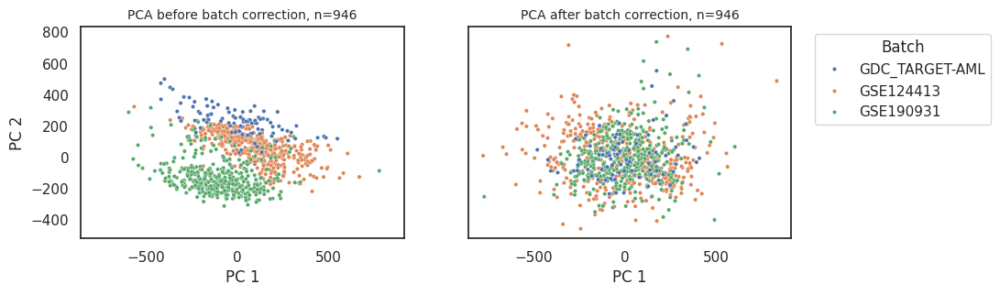
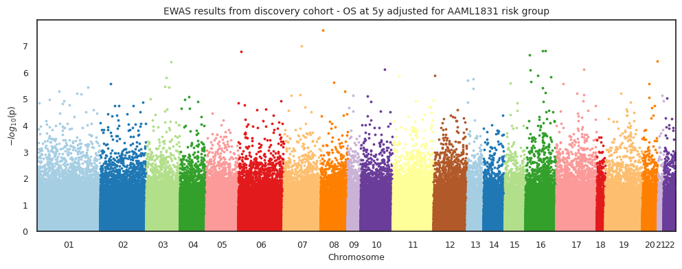
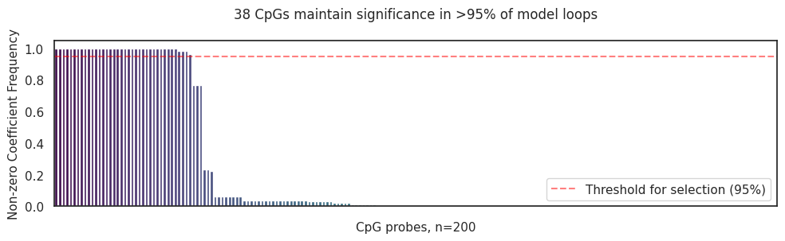

38-CpG AML Signature#
Where the data at?#
Show code cell source
import pandas as pd
import sys
sys.path.append('../')
mount = '/mnt/e/ALMA/'
input_path = mount + 'Intermediate_Files/'
output_path = mount + 'Processed_Files/'
zhou2016_probes_path = mount + 'UnreliableProbesList_Zhou2016/EPIC.anno.GRCh38.tsv'
Load data#
Show code cell source
# read df_discovery and df_test
df = pd.read_pickle(
input_path+'3314samples_331556cpgs_nobatchcorrection_bvalues.pkl').sort_index()
# Read clinical data
clinical_data = pd.read_excel(input_path+'clinical_data.xlsx', index_col=0)
Remove samples based on certain clinical features#
Select samples from AAML1031, 0531, and 03P1 clinical trials#
Show code cell source
clinical_data2 = clinical_data[clinical_data['Clinical Trial'].isin(['AAML0531', 'AAML1031', 'AAML03P1'])]
print(
f'{clinical_data.shape[0]-clinical_data2.shape[0]} samples were removed. {clinical_data2.shape[0]} samples remaining.')
2240 samples were removed. 1287 samples remaining.
Select diagnostic samples only#
Show code cell source
clinical_data3 = clinical_data2[clinical_data2['Sample Type'].isin(
['Diagnosis', 'Primary Blood Derived Cancer - Bone Marrow', 'Primary Blood Derived Cancer - Peripheral Blood'])]
print(
f'{clinical_data2.shape[0]-clinical_data3.shape[0]} samples were removed. {clinical_data3.shape[0]} samples remaining.')
332 samples were removed. 955 samples remaining.
Remove duplicate samples#
Show code cell source
clinical_data4 = clinical_data3[~clinical_data3['Patient_ID'].duplicated(keep='last')]
print(
f'{clinical_data3.shape[0]-clinical_data4.shape[0]} samples were removed. {clinical_data4.shape[0]} samples remaining.')
9 samples were removed. 946 samples remaining.
Match samples in clinical data to samples in methylation data#
Show code cell source
# Match samples in clinical data to samples in methylation data
df2 = df[df.index.isin(clinical_data4.index)].iloc[:, 1:]
print('Samples in clinical data matched to samples in methylation data.')
Samples in clinical data matched to samples in methylation data.
Transform to M-values#
Show code cell source
import math
import numpy as np
def beta2m(val):
'''Transfrom beta-values into m-values'''
return math.log2(val/(1-val))
df3 = df2.apply(np.vectorize(beta2m))
Perform batch correction#
pyCombat is a Python tool for batch effects correction in high-throughput molecular data using empirical Bayes methods
Implementation Preprint: bioRxiv
Original Paper: Adjusting batch effects in microarray expression data using empirical Bayes methods
Show code cell source
from combat.pycombat import pycombat
# Correct batch effects in the training dataset
df4 = pycombat(data = df3.T, batch = df[df.index.isin(df3.index)].iloc[:, 0]).round(3).T
print('Succesfully corrected batch effects in the training dataset.')
Found 3 batches.
Adjusting for 0 covariate(s) or covariate level(s).
Standardizing Data across genes.
Fitting L/S model and finding priors.
Finding parametric adjustments.
Adjusting the Data
Succesfully corrected batch effects in the training dataset.
Evaluate batch effects#
Show code cell source
from sklearn.preprocessing import StandardScaler
from sklearn.decomposition import PCA
import pandas as pd
import seaborn as sns
import matplotlib.pyplot as plt
sns.set_theme(style='white')
def standardize_data(df):
'''Standardizes the data.'''
return StandardScaler().fit_transform(df.T)
def perform_pca(std_data):
'''Performs PCA on standardized data.'''
pca = PCA(n_components=2, random_state=42)
return pca.fit_transform(std_data)
def create_principal_df(pca_data, df4 , df):
'''Creates a DataFrame with the PCA data.'''
principal_df = pd.DataFrame(data=pca_data, columns=['PC1', 'PC2'], index=df4.columns)
principal_df['hue'] = df[df.index.isin(df3.index)].iloc[:, 0]
return principal_df
def filter_df(df, principal_df, threshold):
'''Filters the DataFrame by removing outliers.'''
outliers = principal_df[principal_df['PC1'] >= threshold].index
return df.drop(outliers, axis=1)
X_std = standardize_data(df4.T)
principal_components = perform_pca(X_std)
pcs_batchcorrected = create_principal_df(principal_components, df4.T, df)
X_std = standardize_data(df3.T)
principal_components = perform_pca(X_std)
pcs_uncorrected = create_principal_df(principal_components, df3.T, df)
def plot_data(principal_df, non_outliers):
'''Plots PCA data.'''
fig, (ax1, ax2) = plt.subplots(1, 2, figsize=(10, 3), sharex=True, sharey=True)
for df, ax, title, legend in [(principal_df, ax2,
'PCA after batch correction, n=' + str(principal_df.shape[0]), 'full'),
(non_outliers, ax1,
'PCA before batch correction, n=' + str(non_outliers.shape[0]), False)]:
sns.scatterplot(data=df, x='PC1', y='PC2', hue='hue', s=10, alpha=1, ax=ax, legend=legend)
ax.set_title(title, fontsize=10)
ax.set_xlabel('PC 1')
ax.set_ylabel('PC 2')
plt.legend(bbox_to_anchor=(1.05, 1), loc='upper left', title='Batch')
plt.show()
plot_data(pcs_batchcorrected, pcs_uncorrected)

Note
GDC_TARGET-AML contains AAML0531 and 03P1 samples from methylation array 450k.
GSE124413 contains AAML0531 and 03P1 samples from methylation array EPIC.
GSE190931 contains AAML1031 samples from methylation array EPIC.
Run CoxPH-EWAS#
Show code cell source
from utils.methylize_custom_code.diff_meth_pos_custom import *
# def impute_by_mean(df):
# return df.fillna(df.mean())
# covar_os = round(impute_by_mean(clinical_data4[['os.evnt at 5y','os.time at 5y','Risk_Group_AAML1831_int']]),3)
# ewas_os_cog_adjusted = diff_meth_pos(meth_data = df4,
# duration = covar_os['os.time at 5y'],
# event_observed = covar_os['os.evnt at 5y'],
# pheno_data = covar_os['os.time at 5y'], # not used
# covariates = covar_os['Risk_Group_AAML1831_int'],
# regression_method = "coxph",
# export = 'pkl',
# verbose = False,
# filename=output_path + 'ewas_dmr/ewas_cog_os_batch_corrected_risk_adjusted')
ewas_os_cog_adjusted = pd.read_pickle(output_path + 'ewas_dmr/ewas_cog_os_batch_corrected_risk_adjusted.pkl')
manhattan_plot(stats_results=ewas_os_cog_adjusted,
palette='Paired',
save=False,
suggestive=True,
significant= False,
width=12,
height=4,
statsmode=False,
bonferroni=False,
fontsize=9,
array_type='450k',
explore=False,
border = True,
label_sig_probes=False,
fwer=0.05,
cohorts= " discovery cohort - OS at 5y adjusted for AAML1831 risk group",
filename='../Figures/Manhattan_Plots/ewas_os_unadjusted')

Select CpGs based on suggested-significance p-values (1*10e-5)#
Show code cell source
# Select only rows where `PValue`< 1*10e-5
ewas_os_cog_adjusted_sig = ewas_os_cog_adjusted[ewas_os_cog_adjusted['PValue'] < 1*10e-5]
# Define a function to handle repetitive tasks
def process_df(df, other_df, column_drop):
# Join and sort values
df = df.join(other_df.drop(columns=column_drop), how='inner').sort_values(by='PValue')
# Handle columns with multiple genes separated by `;`
for col in ['GeneNames', 'GeneClasses']:
df[col] = df[col].apply(lambda x: ';'.join(set(x.split(';'))))
return df
# Load manifest
zhou2016_probes = pd.read_csv(zhou2016_probes_path,
sep='\t',index_col=0)[['chrm','start', 'end', 'GeneNames',
'GeneClasses','CGIPosition']]
# Get probes from Zhou et al. (2016) that are in ewasOS_un.index
top_os = process_df(zhou2016_probes, ewas_os_cog_adjusted_sig, ['chromosome', 'MAPINFO'])
# Now include the date in the filename and save to excel
# import datetime
# top_os.to_excel(output_path + 'ewas_dmr/ewas_stats_' + str(datetime.date.today()) + '.xlsx')
# Select only significant probes
ewas_top_cpgs_os = df4[top_os.index.to_list()]
# Save x to pickle in output_path
ewas_top_cpgs_os.to_csv(output_path + 'ewas_dmr/ewas_top_cpgs_os_'+ str(datetime.date.today())+ '.csv')
from itables import show
show(top_os, classes="display nowrap compact", style="width:1500px", autoWidth=False)
| chrm | start | end | GeneNames | GeneClasses | CGIPosition | Coefficient | StandardError | HazardsRatio | 95%CI_lower | 95%CI_upper | ZScore | PValue | FDR_QValue | minuslog10value | |
|---|---|---|---|---|---|---|---|---|---|---|---|---|---|---|---|
|
Loading ITables v2.1.5 from the internet...
(need help?) |
Train CoxPH+Lasso model with the selected CpGs#
Show code cell source
from utils.cox_lasso import *
# raw_coefs = train_coxph_lasso(df=clinical_data4.copy(),
# event= 'os.evnt at 5y',
# time= 'os.time at 5y',
# train_x=ewas_top_cpgs_os,
# cv_n_split=10,
# loops=1000)
# raw_coefs.to_csv(output_path + 'ewas_dmr/ewas_cog_os_raw_coefs_newrisk.csv')
raw_coefs = pd.read_csv(output_path + 'ewas_dmr/ewas_cog_os_raw_coefs_newrisk.csv', index_col=0)
mean_coefs = set_cutoff(coefs=raw_coefs,threshold=0.95)
plot_nonzero_coef_freq(raw_coefs, mean_coefs, threshold=0.95, savefig=False, fig_path=None, figsize=(10,3.2))

Apply signature to discovery dataset and set high/low cutoff#
Show code cell source
continuous_model = '38CpG-HazardScore'
categorical_model = '38CpG-AMLsignature'
CUTOFF = 0.5
df5, threshold = generate_coxph_score(coef_mean=mean_coefs,
x=ewas_top_cpgs_os,
df=clinical_data4,
cont_model_name = continuous_model,
cat_model_name = categorical_model,
cutoff='quantile',
cutoff_value=CUTOFF)
# Plot results
plt.figure(figsize=(5, 3))
sns.histplot(data=df5, x=continuous_model, bins=50, hue = categorical_model)
plt.axvline(threshold ,color='blue', linestyle='--')
plt.legend({f'{CUTOFF*100}% Cutoff: ' + str(threshold.round(3)):threshold})
plt.title(categorical_model + ' in discovery cohort')
plt.show()
Continuous score cut at the value of -2.0431
Apply signature to test dataset#
Show code cell source
# Load test data and pick only columns that are in mean_coefs
df_test = pd.read_pickle(
input_path+'201samples_331556cpgs_nobatchcorrection_bvalues.pkl').sort_index()[mean_coefs.index]
# Transform from beta-values to m-values
df_test2 = df_test.apply(np.vectorize(beta2m))
# Select samples from `clincal_data` that are in `df_test`
clinical_data_test = clinical_data[clinical_data.index.isin(df_test.index)]
# apply signature to test data using `threshold` from training data
clinical_data_test2 , _ = generate_coxph_score(coef_mean=mean_coefs,
x=df_test2,
df=clinical_data_test,
cont_model_name = continuous_model,
cat_model_name = categorical_model,
cutoff=threshold)
# Plot the results
plt.figure(figsize=(5, 3))
sns.histplot(data=clinical_data_test2, x=continuous_model, bins=50, hue = categorical_model)
plt.axvline(threshold ,color='blue', linestyle='--')
plt.legend({'Discovery Cutoff: ' + str(threshold.round(3)):threshold})
plt.title(categorical_model + ' in test cohort')
plt.show()
Continuous score cut at the value of -2.0431
Apply signature to nanopore test dataset#
Show code cell source
# Load nanopore_test data and pick only columns that are in mean_coefs
df_nanopore_test = pd.read_pickle(
input_path+'12samples_331556cpgs_nanoporeseq_bvalues.pkl').sort_index()[mean_coefs.index]
df_nanopore_test = df_nanopore_test.replace(1, 0.999).replace(0, 0.001)
# Transform from beta-values to m-values
df_nanopore_test2 = df_nanopore_test.apply(np.vectorize(beta2m))
# Select samples from `clincal_data` that are in `df_nanopore_test`
clinical_data_nanopore_test = clinical_data[clinical_data.index.isin(df_nanopore_test.index)]
# apply signature to nanopore_test data using `threshold` from training data
clinical_data_nanopore_test2 , _ = generate_coxph_score(coef_mean=mean_coefs,
x=df_nanopore_test2,
df=clinical_data_nanopore_test,
cont_model_name = continuous_model,
cat_model_name = categorical_model,
cutoff=threshold)
# Plot the results
plt.figure(figsize=(5, 3))
sns.histplot(data=clinical_data_nanopore_test2, x=continuous_model, bins=50, hue = categorical_model)
plt.axvline(threshold ,color='blue', linestyle='--')
plt.legend({'Discovery Cutoff: ' + str(threshold.round(3)):threshold})
plt.title(categorical_model + ' in nanopore cohort')
plt.show()
Continuous score cut at the value of -2.0431
Merge and save files#
Show code cell source
final_df = pd.concat([clinical_data_test2, clinical_data_nanopore_test2, clinical_data4], axis=0)
final_df = final_df.sort_index().iloc[:,-3:]
final_df.to_excel('../data/signature_results.xlsx')
# Save ewas results to data folder
mean_coefs.to_frame(name='38CpG-AMLsignature coefficients')\
.join(top_os, how='right')\
.sort_values(by='38CpG-AMLsignature coefficients', ascending=False)\
.to_excel('../data/ewas_top_cpgs_os_aml_signature.xlsx')
print('Saved signature results to ../data/signature_results.xlsx')
print('Saved EWAS top CpGs + signature coefficients to ../data/ewas_top_cpgs_os_aml_signature.xlsx')
Saved signature results to ../data/signature_results.xlsx
Saved EWAS top CpGs + signature coefficients to ../data/ewas_top_cpgs_os_aml_signature.xlsx
Watermark#
Author: Francisco_Marchi@Lamba_Lab_UF
Last updated: 2024-09-23
Python implementation: CPython
Python version : 3.8.18
IPython version : 8.12.3
methylize: not installed
pandas : 2.0.3
Compiler : GCC 11.4.0
OS : Linux
Release : 5.15.133.1-microsoft-standard-WSL2
Machine : x86_64
Processor : x86_64
CPU cores : 32
Architecture: 64bit
Git repo: git@github.com:f-marchi/ALMA.git